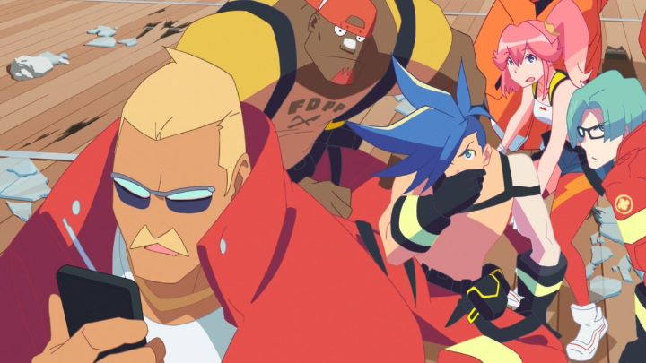

Trends are weird sometimes. You wouldn't even know something was a trend until you saw it twice in the same period of time. In 2019, the trend for anime was "firefighters," an overlooked occupation that saw two supernatural stories: the Trigger film "Promare" and the anime series "Fire Force." They were cool when I was a kid, I guess, so I guess it makes sense for it to come around eventually... just an interesting coincidence that it came about now. "Promare" also happens to be Studio Trigger's first feature film, if you ignore their work with "Little Witch Acaemia." The talented team of Gainax veterans (known for their work in "Gurren Lagann," among other things), had made their mark with shows like "Kill la Kill" and "Darling in the Franxx." When it comes to high-spirited exaggerated action and emotion, few other artists can compare. "Promare" is a spiritual successor to both "Gurren Lagann" and "Kill la Kill," reuniting the writers and directors and designers of those shows. A dedicated fan will also see clever references to these past franchises, from the main hero's design and personality looking oddly similar, and the technology used by the characters being from the "Matoi" company. Set in a near alternate future, the story is about the "Burnish," a nickname for mutated humans around the world who spontanteously combust into flames (don't you hate when that happens?). It doesn't harm them, but it burns and destroys everything around them, as fire is ought to do. It's natural for fire to do this, and therefore, for the Burnish to spout flames; they find it difficult to control themselves, although the cause for this power is unknown. Decades later, the Burnish are subject to alienation and racism from regular humans, regardless of whether or not they cause any harm. A terrorist group called "Mad Burnish" represents the pain they feel. Galo is a rookie member of the Burning Rescue Fire Department, a fire-force team that races around the city to put out the flames, and if necessary, to stop the terrorist Burnish that caused them. It takes an unfortunate everyday event and personifies it. But quickly, it becomes clear that Lio Fotia, the young-looking leader of Mad Burnish, isn't a bad person with bad intentions. The terrorists go out of their way not to kill anyone when they attack skyscrappers with flame. Galo learns the truth bit by bit, and the scope of the action grows more and more. The first 15 minutes are already filled with action; by the end, not just the city, but the solar system itself is involved. It's epic. And from the minds of "Gurren Lagann" and "Kill la Kill," I expected nothing less.At the core, there is a theme and reason behind the building-crushing punches. Racism and tolerance is at the center of the conflict. It's a bit on the nose at times, but effective. And it's more relevant a theme than ever. Not just for a perceived threat to survival: for no particular reason, gay french-kissing is a part of the climax. When it happened as I watched in a movie theater, the girls swooned and laughed, then applauded. Everyone had a big smile on their face. It felt random, but in a movie with exposition involving aliens, political scandal, and the end of the world, it's easy to defend by saying: "why not?" It's not just the concept of acceptance: the driving threat is related to human-overpopulation, rising tensions, and global warming, and what lengths we should be willing to go to in order to save ourselves. "Promare's" naive attitude of "don't think about how to fix it... just do it!" doesn't provide any real answers, but might inspire viewers in determining the complex issues of the world don't have to be so complex... or not. It's anime, give it a break.Despite the action, I was surprised to think of this as a relatively kid-friendly movie. Unlike past works, there's no inappropriate fanservice at the expense of female characters. There isn't any blood or gore. Furthermore, the firefighters, rocking exo-suits with high-tech weapons and tools and blaring red-and-blue sirens, remind me of Fisher-Price action figures from my childhood of fire trucks and police men. I wouldn't take a five-year-old, but a ten-year-old boy would be totally into this. The storyline gets a little ridiculous past the half-way point, but self-aware humor and quick puns in the dialogue help keep the viewing experience fun. That humor and dedication to pushing things past their limit helps save the story. The movie had a weird issue with pacing, with a big lull in the middle of the movie full of exposition, making me patiently wait for action to match the opening setpiece. If you stop to think, there are more than a few plotholes. And being a self-contained movie, I felt a few side characters didn't really get the time their design and personalities deserved, and events with main characters occur too quickly to feel proper development was made. There's also a strange transition between cuts in different locations, which does its job, but felt a little distracting. But these are minor issues."Promare" pulls out all the stops for a big-screen expereince. Visually, it's very ambitious. Neon colors and colored outlines are used for a distinctive style... it's not as bold as I would have liked, but the style of the characters and backgrounds rely heavily on it, and I respect that confidence. 3D backgrounds and effects use the philosophy of "sharp angles," purposely making everything look like squares or triangles. Even a lens flare of a sunset uses squares instead of circle-sun-spots. This lends well to the cyber-aesthetic, and the effects of massive flames, ash, lava and ice make for spectacular imagery, inspired by old 3D video games and LP album covers. Typically using 2D characters, nearly everything else is rendered in 3D, with limited detail and flat colors to help blend things. The effect doesn't blend properly, but it allows for great mecha-action scenes and fire effects, and for the overall style, I thought it worked perfectly fine. Yes, I'll dream of what a purely 2D animation of these scenes would have looked like, but I would accept and encourage more films that looked like this. The music is pretty good too. The vocal theme song "Inferno" gets referenced in the press, but I didn't notice it as much as the other vocal tracks; the track "Superfly" from the trailers and bigger action scenes was the most memorable to me (frustratingly, this isn't included in the OST like the other vocal tracks, but available as a standalone single). To their credit, many of them were actually sung in English, to my surprise. Generally, the soundtrack pumps up the action with a little extra flair. In movie theaters, I saw the film with GKIDS' English dub. And it was good. Good actor choices were made for all the characters, and delivery felt appropriately 'big' or 'subtle' as required. And with so much happening on the screen at times, an English dub might feel necessary. But with such a ridiculous story, watching it in subtitles just feels more appropriate. And the trailers went the extra mile with stylized fonts and positions of the text, but FYI: I went a second time to see "Promare" in the theater, and the subtitles are just normal (likely the stylized version would have simply been impossible). Also, the Japanese-sub version used more foul language, and missed some opportunities for jokes that the English dub nailed... so after comparing both directly, I would recommend the dub.Yes, I did pay to see "Promare" twice in the theater. I don't do that often. That should speak a lot on its own.Aside from a few quibbles, "Promare" is a fantastic spectacle of action and color. But is it a new standard for Studio Trigger? Honestly, I don't think it exceeds the best elements of their past works, in design, animation, music or story. But it combines those elements to be one of the better (or at least most accessible) works when taken as a whole. As one fan described it, it was like watching a "best-of playlist" of Trigger's artists. Galo, the stupid hero at the center, is really just a representation of the Otaku-mindset, striving to do things in the coolest way possible, but more importantly, using his burning passion to save humans from the harsh flames of the world. It's an infectious and admirable attitude, exactly what we want from anime.
- "Ani" More reviews can be found at : https://2danicritic.github.io/ Previous review: review_Prison_School Next review: review_Psychic_School_Wars